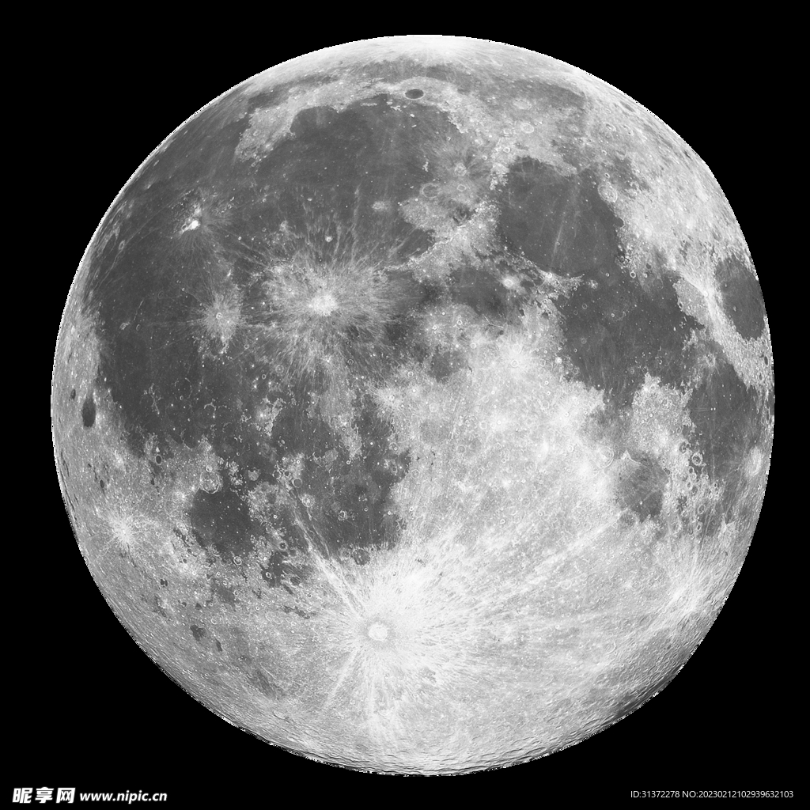
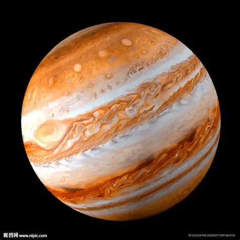

记录时间：2025-10-16 晚20:00
1. 安装望远镜：按照说明书组装三脚架→安装主镜→调整寻星镜（对准远处的电线杆，确保寻星镜和主镜视野一致）；
2. 寻找月球：用寻星镜找到月球→转动调焦轮，直到月球表面清晰（环形山和月海清晰可见）；
3. 拍摄月球：将手机放在支架上，对准目镜→调整手机焦距，拍摄月球照片（共拍了12张，选了最清晰的3张）。
第一次用望远镜看月球，感觉非常震撼！以前在课本上看到的环形山，真正看到时比图片更清晰，月海的颜色（灰色）也和想象中不一样。最开心的是拍到了月球的特写照片，虽然有点模糊，但这是我第一次用望远镜拍摄的成果，很有纪念意义！
照片来源：本人拍摄（2025-10-15）
记录时间：2025-11-6 晚19:30
今天用望远镜观测了木星，看到了木星的条纹和四颗伽利略卫星（ Io、Europa、Ganymede、Callisto）。木星的条纹比月球的环形山更难拍，因为木星的视直径很小，需要更高的放大倍数。下次打算用相机代替手机，拍摄更清晰的木星照片。
照片来源：本人拍摄（2025-11-5）